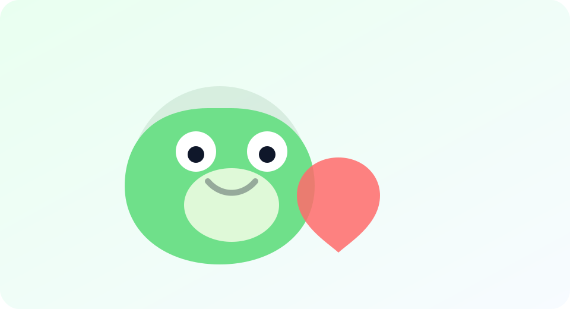

Выращивайте жабу
Виртуальная жабка — как тамагочи: ухаживайте, развивайте и наблюдайте прогресс. Хороший старт даёт быстрый рост и уверенность в боях.
Игровой бот в Telegram · тамагочи-игра · виртуальный питомец
Это игра-тамагочи в чате: заботьтесь о виртуальной жабке, развивайте её, участвуйте в боях и событиях, сравнивайте силу с друзьями и кланами. Быстрый старт — без лишних слов.
Здесь не нужно разбираться часами. Выбираете путь: забота, бои или добыча — и играете.
Виртуальная жабка — как тамагочи: ухаживайте, развивайте и наблюдайте прогресс. Хороший старт даёт быстрый рост и уверенность в боях.

Игра-бот в Telegram становится интереснее в компании: дуэли, сравнение силы, события и борьба за позиции. Идеально для чатов.
Активность приносит полезное: предметы, ресурсы и возможности для развития. Чем умнее играете — тем сильнее ваша жабка.
Сохраняйте в закладки: старт, подсказки и инструменты. Всё простым языком.
Нажимайте — и вы в игре. Дальше проведём по шагам.
Если вы искали игровой бот в Telegram или тамагочи-игру, Жабабот отлично подходит для старта: игра запускается прямо в мессенджере, а прогресс зависит от регулярных действий и участия в активностях. В центре — ваша виртуальная жабка: уход, рост и развитие, плюс соревновательные режимы для игры с друзьями.
На этом сайте мы собираем понятные инструкции для новичков: с чего начать, подборки советов в разделе гайды, справочник в wiki и полезные инструменты вроде калькулятора сытости. Главная цель — быстро привести нового игрока к первым победам, чтобы игра “зацепила”.
Важно: это фан-проект помощи новичкам и навигации по игре. Чтобы начать играть, используйте кнопку “Начать” — она ведёт в Telegram-бот.